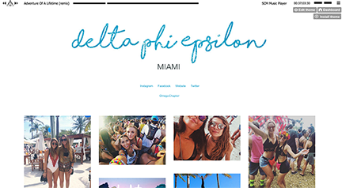
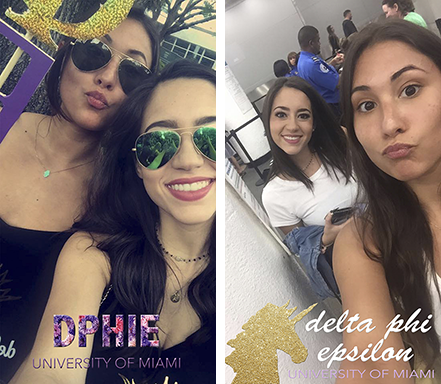

Tumblr
In her position as Social Media Coordinator with Delta Phi Epsilon, Cohen was responsible for updating images on the Tumblr twice a week. She managed the layout, music, and even designed the title banners.
To the left are images of two most recent tumblr banners. One is shown in effect on the page. These banners are meant to be simplistic yet add to the theme of the Tumblr page at the time. These were created using a combination of Adobe Photoshop and Illustrator. During Cohen's position, the Delta Phi Epsilon Tumblr page received positive feedback from various Greek Life platforms and was published by a few websites. Please visit University Primetime Article.
Snapchat
Cohen also created and was in charge of managing the Delta Phi Epsilon Snapchat account. She monitored what was uploaded to the Snapchat "story" everyday and managed to obtain more followers everyday.
The images to the left are original Snapchat filters created by Liat Cohen being used by members of Delta Phi Epsilon. She designed, developed, and submitted these filters to help publicize and market the sorority around the University of Miami Campus. Delta Phi Epsilon was the first to have an original Snapchat filter among its surrounding Greek Life organizations. These filters were created using Adobe Illustrator and Photoshop.
Managing the Delta Phi Epsilon Facebook page and account was another one of Cohen's responsibilites. In addition to adding posts, photos, and updates, she designed original Facebook Cover Photos. One is displayed to the left.